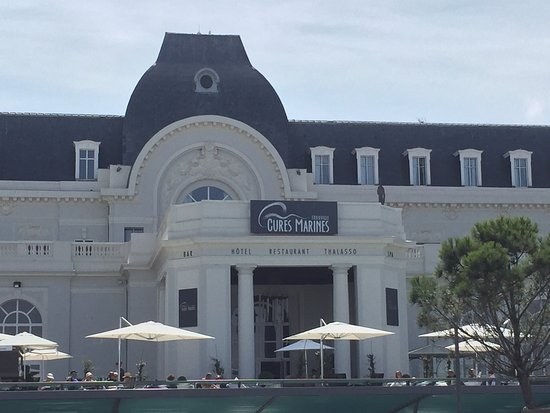
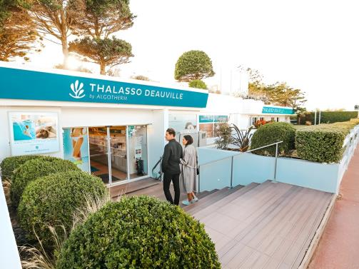
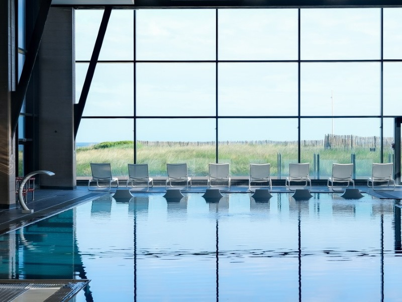

Face à la mer, la Côte Fleurie offre plusieurs possibilités pour s'accorder une pause bien-être. Soins, massages, bains et espaces de détente permettent de profiter d'un moment de relaxation dans un cadre privilégié.


